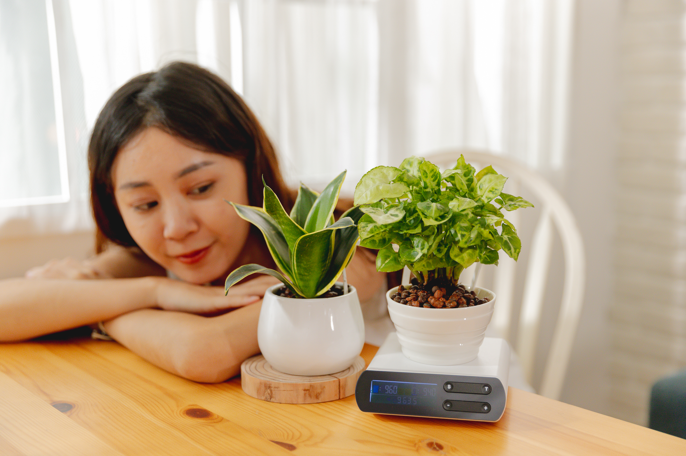
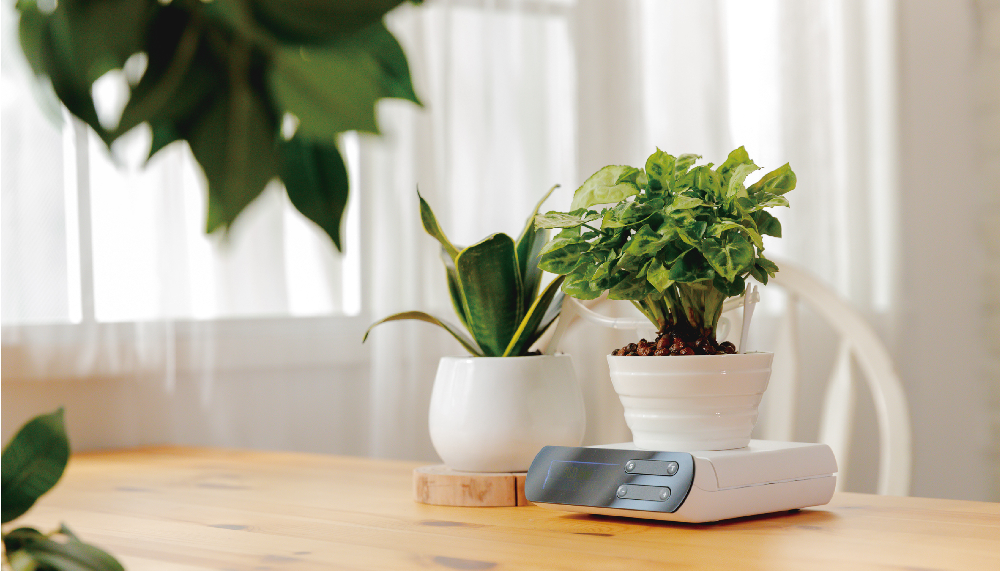
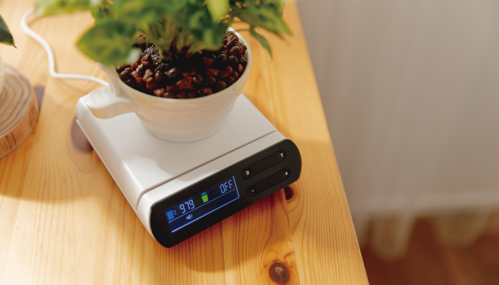
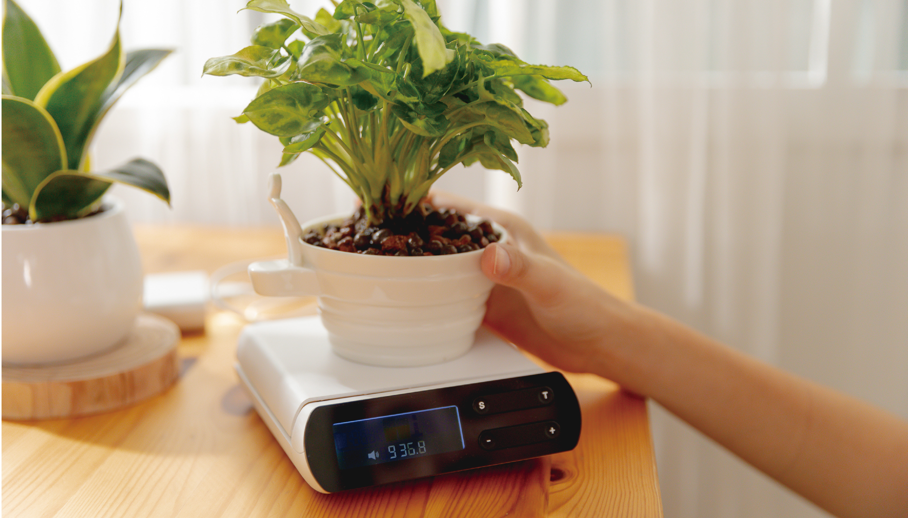
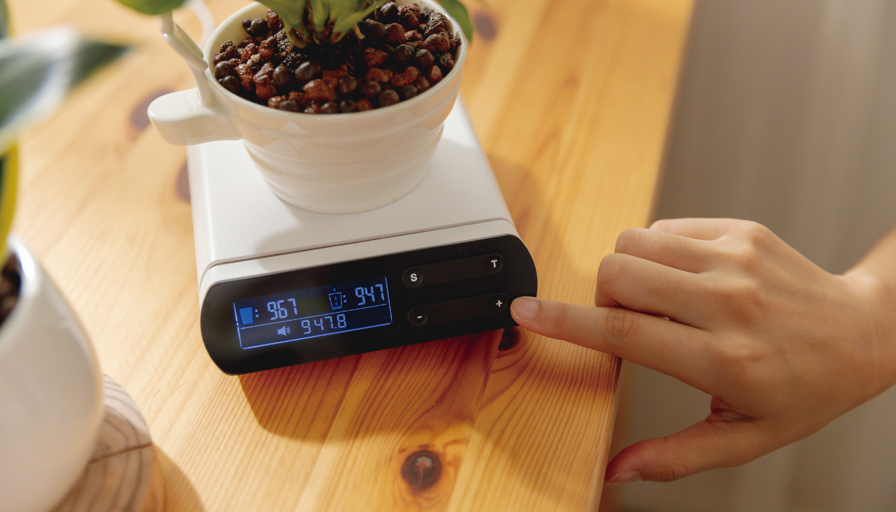
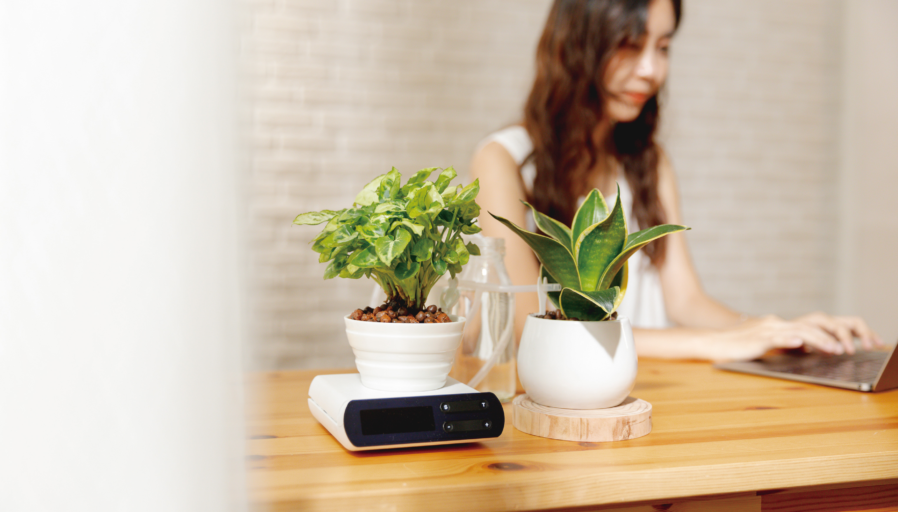

請問您有在種植盆栽嗎？（單選）(1/10)
有，我是親朋好友認證的綠手指！
有，可是我並不那麼擅長QQ
沒有，可是我很想試試看！
沒有太大的興趣
請問您如何判斷盆栽是否要澆水？（複選）(2/10)
土壤或介質乾才澆水
固定週期，例如2～3天澆一次
想到就澆
看心情
請問您在種植盆栽中有遇到下列哪些困擾？（複選）(3/10)
不知道不同植物的澆水週期
忘記澆水
找不到好看的盆栽
沒有空間擺放水瓶
其他

［Walarm澆水鬧鐘］
是專為桌上小型盆栽設計、唯一透過感測器與喇叭的搭配讓盆栽化被動為主動的產品，渴了自動澆水，沒水時發出悅耳的樂曲提醒您它要喝水，再也不需煩惱盆栽渴得枯萎或喝撐了而爛根。
［Walarm澆水鬧鐘］的設計8大特點，以下哪些是您喜歡的呢？（複選）(4/10)
自動澆水：透過盆栽重量來精算土壤含水量，配合環境的溫溼度變化自動補充適當水份
58首悅耳名曲提醒換水：水瓶需要補充水量時即會播放一段3~20 秒不等的名曲輕柔提醒，讓您輕鬆自在補充水量
澆水提醒夜間不擾人：晚上８點到早上８點靜音，保持安靜
可以放心出差、旅遊、休長假：自動澆水, 只要用適當容量的容器即可放心地長時間外出
澆水設定有記憶, 停電不擔心：自動記憶澆水設定值，不用擔心斷電而需重設定
USB供電很利便：只要一條USB轉1.3口徑的電源線，讓您方便使用
介面簡易好操作：一鍵設定澆水量，簡單省力
可同時供2盆栽澆水使用：透過3通接頭可以同時供應2個盆栽澆水使用
請問您願意花費多少費用來擁有［Walarm澆水鬧鐘］，輕鬆晉升綠手指呢？（單選）(5/10)
NT$ 850~949
NT$ 950~1049
NT$ 1050~1149
NT$ 1150~1249
請問您願意贊助［Walarm澆水鬧鐘］的意願為何？（1-10）(6/10)
0
請問您的性別是？(單選)(7/10)
男性
女性
多元性別
請問您的年齡區間？(單選)(8/10)
18歲以下
19-24歲
25-30歲
31-40歲
41-50歲
51歲以上
想要入手最優惠的Walarm澆水鬧鐘？歡迎留下您的 E-Mail及手機，我們將在專案上線時通知你（必填項）(9/10)
你想用Walarm澆水鬧鐘種什麼植物呢？還是有任何建議嗎？歡迎提供給我們做為改進參考喔！(10/10)